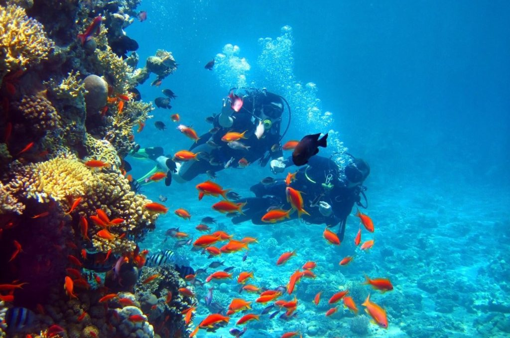
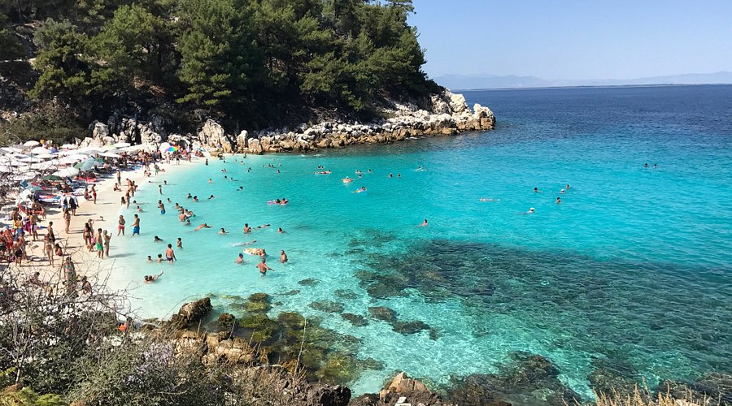
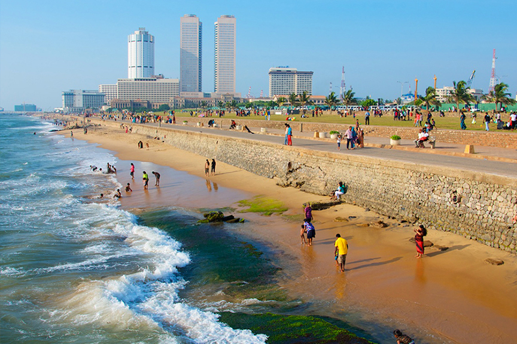

BEACHES
Sri Lanka’s beaches are celebrated for their breathtaking beauty, offering a stunning blend of golden sands, clear turquoise waters, and lush coconut palms swaying gently in the breeze. The island’s southern and eastern coasts are home to some of the most picturesque beaches, like Unawatuna, Mirissa, and Tangalle. These spots are perfect for sunbathing, surfing, and snorkeling, with shallow waters ideal for observing vibrant coral reefs and colorful marine life. Beyond the coastal scenery, local fishing villages and traditional beachside huts create an inviting atmosphere for visitors to experience Sri Lankan coastal life up close.
On the eastern side of the island, places like Arugam Bay are renowned for their surf-friendly waves and relaxed ambiance, attracting surfers from around the globe. This region, less crowded than the south, also offers serene beaches like Pasikudah and Kalkudah, known for their calm, shallow waters—perfect for family-friendly activities and safe swimming. Many of these beaches are surrounded by lush landscapes, often dotted with ancient temples and wildlife, making the beach experience even richer. Whether for relaxation, adventure, or cultural immersion, Sri Lanka's beaches provide a wide range of activities and a slice of paradise.
MUST SEE PLACES
Pasikudah and Kalkudah

Hikkaduwa
Unawatuna

Marble beach

Nilaveli beach
